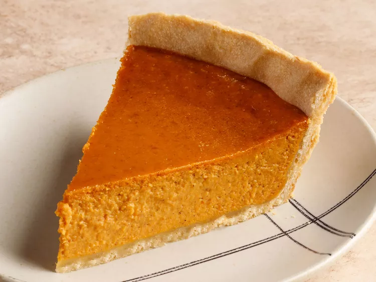

Pumpkin Pie recipe

Description
Thanksgiving wouldn't be complete without a homemade pumpkin pie.
But we're going to let you in on a little secret: Making the seasonal
dessert is actually quite simple. Don't let the season pass you by
without trying this easy pumpkin pie recipe.
Ingredients
- Pie crust
- 16 oz. can of pumpkin puree
- Sweetened condensed milk
- Eggs
- Pumpkin pie spice
Steps
- Put pie crust in 9 in pie tin
- Mix ingredients until smooth
- Bake in a preheated oven at 425 degrees for 15 minutes, then reduce
temperature to 350 degrees, baking until pie is set.